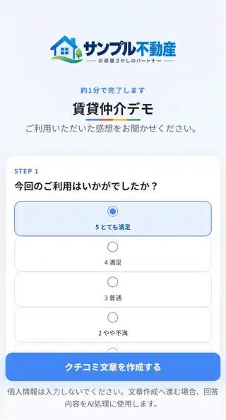
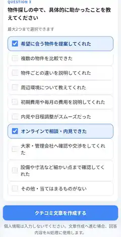
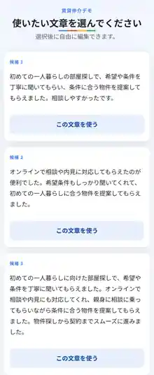
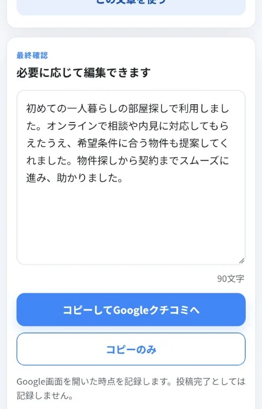

POSTING DEMO
投稿までのデモ
アンケートから、クチコミ文章の完成まで。実際の利用画面で、投稿までの流れをご覧いただけます。

満足度を選ぶ
今回のご利用について、満足度を選びます。

質問に回答する
具体的に良かったことなど、アンケートを選ぶだけです。

使いたい文章を選ぶ
回答内容をもとに、クチコミ文章候補が作成されます。

投稿ページへ進む
選んだ文章は確認・編集できます。クチコミの投稿ページへ進みます。
実際に操作できる個別デモは、お問い合わせ後にご案内しています。
導入について相談する
公開ページでは実際の利用画面を使って、投稿までの流れをご覧いただけます。